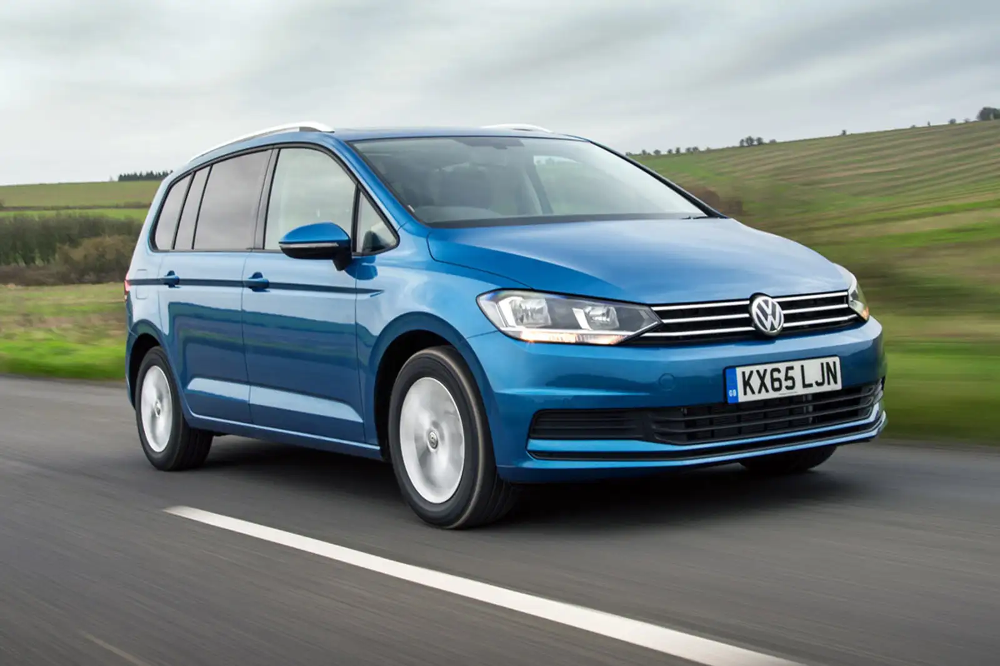

|
ARTEON 2021
The engines were 2.0-liters with power 218 HP. 
|
ARTEON
The engines were 2.0-liters powerplants with power 177 HP. |
ATLAS
The engines were 2.0-liters turbo four-cylinder with power 238 HP. 
|
BETTLE
Engine: The classic Beetle initially had an air-cooled, rear-mounted,
flat-four-cylinder engine. The engine size and power output varied over the years,
but the most common size was 1.2 to 1.6 liters.
Transmission: A four-speed manual transmission was standard. 
|
GOLF 6
The engines were 2.0-liters four-cylinder with power 176HP. 
|
|
GOLF 7
The engines were 2.0-liters four-cylinder with power 150 to 184 hp. 
|
GOLF 8
The engines were 2.0-liters four-cylinder with power from 100 hp to over 300 hp. 
|
GOLF GTI 2014
The engines were 2.0-liters turbocharged inline-4 engine with power 210 hp. 
|
GOLF GTI
The engines were 2.0-liters inline-4 engine with power 241 hp. 
|
ID 7
The ID.7 is powered by an electric motor,
power ranging from around 201 to 295 HP.
Battery capacities can range from around 45 kWh to 77 kWh.
380 to 499 kilometers on a single charge. 
|
|
ID BUZZ
It is powered by an electric motor or motors, depending on the configuration.
it has 200hp.The ID. Buzz is equipped with a high-capacity battery to provide a substantial electric driving range.
takes design inspiration from the classic Volkswagen Microbus 
|
ID 3
The ID.3 is powered by an electric motor,
power ranging from around 148 to 201 HP.
Battery capacities can range from around 45 kWh to 77 kWh.
330 to 547 kilometers on a single charge. |
ID 4
The ID.4 is powered by an electric motor,
power ranging from around 201 to 295 HP.
Battery capacities can range from around 45 kWh to 77 kWh.
402 to 499 kilometers on a single charge. |
JETTA 2022
The engines were 2.0-liters inline-4 engine with power 135 hp. 
|
MICROBUS
The engines were 1.4-liters inline-4 engine with power 96 hp. |
|
PASSAT B8
The engines were 2.0-liters inline-4 engine with power 135 hp. 
|
PASSAT CC 2010
The engines were 2.0-liters inline-4 engine with power 147 hp. 
|
PASSAT CC 2015
The engines were 2.0-liters inline-4 engine with power 155 hp. 
|
POLO 2023
The engines were 1.6-liters engine with power 90 hp. 
|
T-ROC 2022
The engines were 2.0-liters engine with power 137 hp. 
|
|
TAOS
The engines were 1.5-liter turbocharged four-cylinder with power 158 hp. |
TIGUAN 2014
The engines were 2.0-liter engine with power 160 hp. 
|
TIGUAN 2020
The engines were 2.0-liter turbocharged four-cylinder 205 hp 
|
TUAREG
The engines were 2.0-liter engine with power 167 hp. |
TOURAN

The engines were 3.0-liter V6 engine with power 275 hp. |